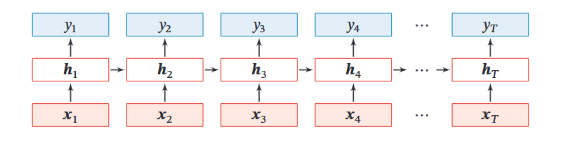
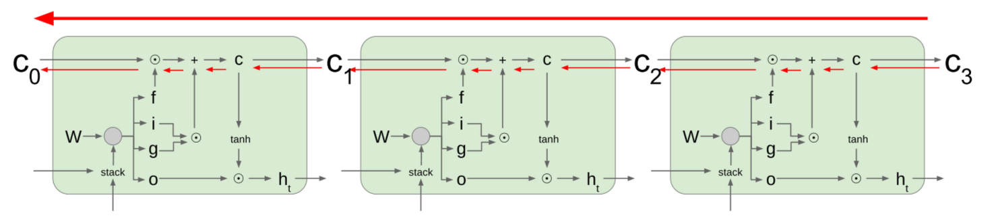

本期内容
- MLP与CNN的局限
- RNN原理
- RNN前向传播与反向传播
- LSTM
- 总结
MLP与CNN的局限
- 架构共性：均为定长输入 → 定长输出，隐含样本独立同分布（i.i.d.）假设。
- 无法处理的场景：
任务类型 示例 不定长序列→定长类别 姓名（如“张三”“李清照”）→性别预测 定长→不定长序列 图片→文字描述（Image Caption） 不定长→不定长（一一对应） 视频逐帧分类 不定长→不定长（无对应） 机器翻译（如“我的梦”→“My Dream”） - 本质缺陷：无法建模序列中元素的前后依赖关系（如自然语言、时间序列、语音等）。
RNN原理
直观理解
- 核心创新：引入隐藏状态 $h_t$ 作为“内部记忆”，打破i.i.d.假设。
- 变量含义：
符号 含义 $x_t$ 时间步 $t$ 的输入（如姓名的第 $t$ 个字符的One-hot向量） $h_t$ 时间步 $t$ 的隐藏状态（记忆当前及历史信息，仅由 $x_t$ 和 $h_{t-1}$ 决定） $y_t$ 时间步 $t$ 的输出（由 $h_t$ 映射得到，不参与 $h$ 的传递）
数学定义
- 隐藏状态更新（记忆更新）： $$h_t = \tanh(W_{hh} h_{t-1} + W_{xh} x_t)$$
- 输出预测： $$y_t = W_{hy} h_t$$
- 关键特性：所有时间步共享同一套权重（$W_{hh}, W_{xh}, W_{hy}$），可处理任意长度序列。
- RNN的工作流程如下图所示：

与统计模型的关联
- 向量自回归（VAR）：线性时间序列模型 $h_t = c + A h_{t-1}$，若 $c = B x_t$，则退化为 $h_t = B x_t + A h_{t-1}$，是RNN的线性特例。
- 非线性扩展：RNN通过 $\tanh$ 激活函数，将线性自回归升级为非线性序列建模。
RNN前向传播与反向传播
前向传播与损失函数
根据任务类型，损失函数为各时间步交叉熵的总和：
| 任务类型 | 损失计算方式 |
|---|---|
| 序列分类（如姓名→性别） | 仅取最后时刻 $h_T$ 计算交叉熵（忽略中间 $y_t$） |
| 序列生成（下一词预测） | 逐时间步计算交叉熵（如输入“唐”→预测“纳”，真实标签“纳”对应概率的负对数） |
| Seq2Seq（如机器翻译） | 编码器压缩输入序列，解码器逐词生成，总损失为各输出词交叉熵之和 |
反向传播：BPTT
- 原理：沿时间轴链式求导，梯度从最后时刻 $L_T$ 反向传递至初始时刻： $$\frac{\partial L_T}{\partial h_1} = \frac{\partial L_T}{\partial h_T} \cdot \prod_{k=2}^T \frac{\partial h_k}{\partial h_{k-1}}, \quad \frac{\partial h_k}{\partial h_{k-1}} = \tanh'(\cdot) W_{hh}$$
梯度消失
尽管RNN具备记忆功能，但由于其特殊的网络结构，RNN存在梯度消失的问题。
基于上述 BPTT 的链式法则，梯度消失主要由以下两个因素共同导致：
| 成因分类 | 数学表达与解释 |
|---|---|
| 激活函数饱和 | $\tanh’(z) \in (0, 1]$，当输入值较大或较小时，导数趋近于 0。 在连乘过程中，只要大部分时间步处于饱和区，梯度就会被显著压缩。 |
| 权重矩阵连乘 | 连乘项中包含 $W_{hh}^{T-1}$。从线性代数角度看，若 $W_{hh}$ 的最大奇异值 $< 1$，多次连乘后会指数级衰减至 0；即便 $\tanh’$ 不恒为 0，矩阵连乘也会导致梯度消失。 |
结论：由于梯度在时间轴上经历了大量小于 1 的因子（$\tanh’$ 和 $W_{hh}$）的连乘，早期时间步的梯度 $\frac{\partial L_T}{\partial h_1}$ 会指数级趋近于 0，导致模型无法学习长距离依赖关系。
为此学者又在RNN的基础上进行改进，提出了LSTM。
LSTM
设计初衷
为解决基础RNN的梯度消失/爆炸问题（源于 $\tanh’(\cdot)$ 连乘与 $W_{hh}$ 连乘的指数衰减），LSTM引入门控机制与细胞状态，构建梯度“高速公路”，缓解长距离依赖捕捉困难。
核心组件与作用
| 组件 | 符号 | 激活函数 | 作用 |
|---|---|---|---|
| 遗忘门 | $f_t$ | $\sigma$ | 控制上一时刻细胞状态 $C_{t-1}$ 的保留比例（1=全保留，0=全遗忘） |
| 输入门 | $i_t$ | $\sigma$ | 控制当前候选状态 $\tilde{C}_t$ 的写入强度 |
| 候选状态 | $g_t$ | $\tanh$ | 生成当前时刻的新信息（范围 $[-1,1]$） |
| 输出门 | $o_t$ | $\sigma$ | 控制当前细胞状态 $C_t$ 对外输出的比例 |
细胞状态 $C_t$
- 本质：贯穿时间轴的“传送带”，信息可直线传递，几乎无衰减。
- 梯度特性：梯度从 $C_t$ 传向 $C_{t-1}$ 时仅与遗忘门 $f_t$ 逐元素相乘，无直接矩阵乘法，避免连乘导致的梯度消失。
核心计算公式
- 门控与候选状态生成（由 $h_{t-1}$ 与 $x_t$ 拼接后经线性变换得到）： $$ \begin{pmatrix} i_t \\ f_t \\ o_t \\ g_t \end{pmatrix} = \begin{pmatrix} \sigma \\ \sigma \\ \sigma \\ \tanh \end{pmatrix} W \begin{pmatrix} h_{t-1} \\ x_t \end{pmatrix} $$
- 细胞状态更新（加法更新，核心缓解梯度消失）： $$ C_t = f_t \odot C_{t-1} + i_t \odot g_t $$
- 隐藏状态输出（过滤后对外输出）： $$ h_t = o_t \odot \tanh(C_t) $$
下图演示了LSTM如何工作：

从这个图我们可以更直观的理解为什么LSTM能避免梯度消失，RNN在反向传播时，需要反复对tanh函数求导，由于导数小于1，连乘下去就会导致梯度消失。而LSTM在反向传播时，只需要对tanh求一次导，接下来都是CT和CT-1之间直接求导，这样就不会存在梯度消失的问题了。
与RNN的区别
| 对比项 | 基础RNN | LSTM |
|---|---|---|
| 状态更新 | 乘法更新 $h_t=\tanh(W_{hh}h_{t-1}+W_{xh}x_t)$ | 加法更新 $C_t=f_t\odot C_{t-1}+i_t\odot g_t$ |
| 梯度路径 | $\prod \tanh’(\cdot)W_{hh}$（易消失） | $\prod f_t$（可控制，遗忘门≈1时梯度直通） |
| 记忆与输出 | 共用 $h_t$（记忆与输出耦合） | 分离 $C_t$（长期记忆）与 $h_t$（当前输出） |
总结
RNN擅长处理变长序列，但基础RNN存在梯度消失问题，难以捕捉长距离依赖。为此引入LSTM/GRU，通过门控机制和加法更新构建梯度“高速公路”，缓解了该问题。然而，面对极长序列，LSTM仍无法完美记忆开头信息，这推动了注意力机制的发展，通过动态聚焦关键信息来弥补这一缺陷。